Community Welfare
Community support and welfare initiatives for people who need assistance.
SERVING WITH COMPASSION • CREATING CHANGE
AMMA Social Welfare Organisation is committed to community welfare, dignity, opportunity and positive social change.
WHO WE ARE
AMMA Social Welfare Organisation is a community-focused organisation dedicated to social welfare and inclusive development.
This is the basic website version. The official history, registration details, founders, achievements and programme information can be added later.
Learn more about AMMA →LEADERSHIP

Leading AMMA Social Welfare Organisation with compassion, service and a commitment to helping people in need.
Our organisation is dedicated to community welfare, social support and meaningful service initiatives.
WHAT WE DO
These sections can be replaced with AMMA's verified programmes and services.
Community support and welfare initiatives for people who need assistance.
Educational support, awareness programmes and opportunities.
Health awareness and wellbeing initiatives for communities.
Relief, outreach, campaigns and other social-service activities.
Together, small acts of compassion can create lasting change.
AMMA Social Welfare Organisation
OUR IMPACT
Sample figures are shown for design only. Replace them with verified statistics before publishing.
LIFE AT AMMA
A glimpse of AMMA Social Welfare Organisation’s community service, outreach, support and recognition.
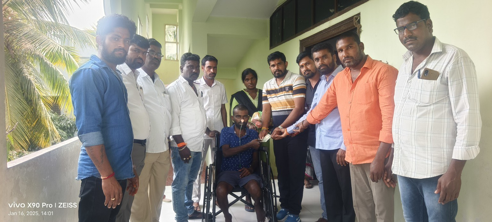
Helping a Person in NeedDirect community support and assistance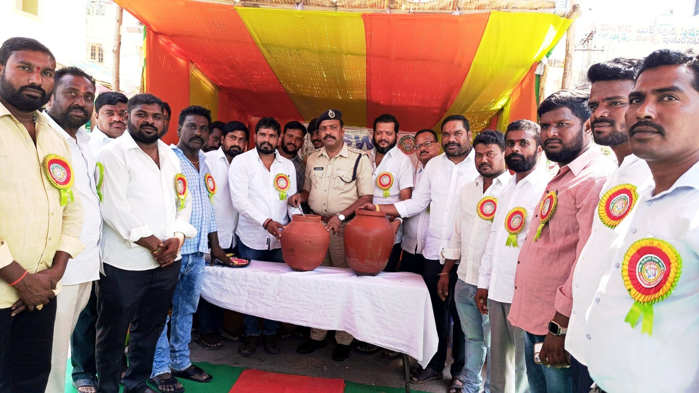
Water ServiceProviding drinking water during community outreach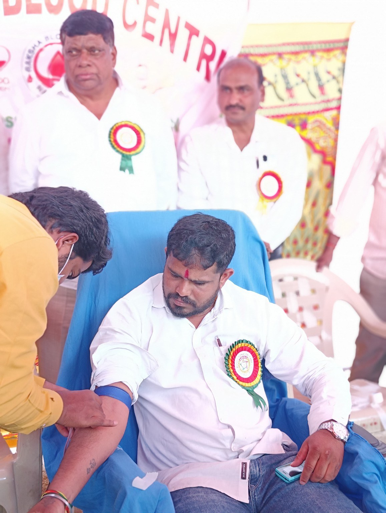
Blood DonationSupporting voluntary blood donation initiatives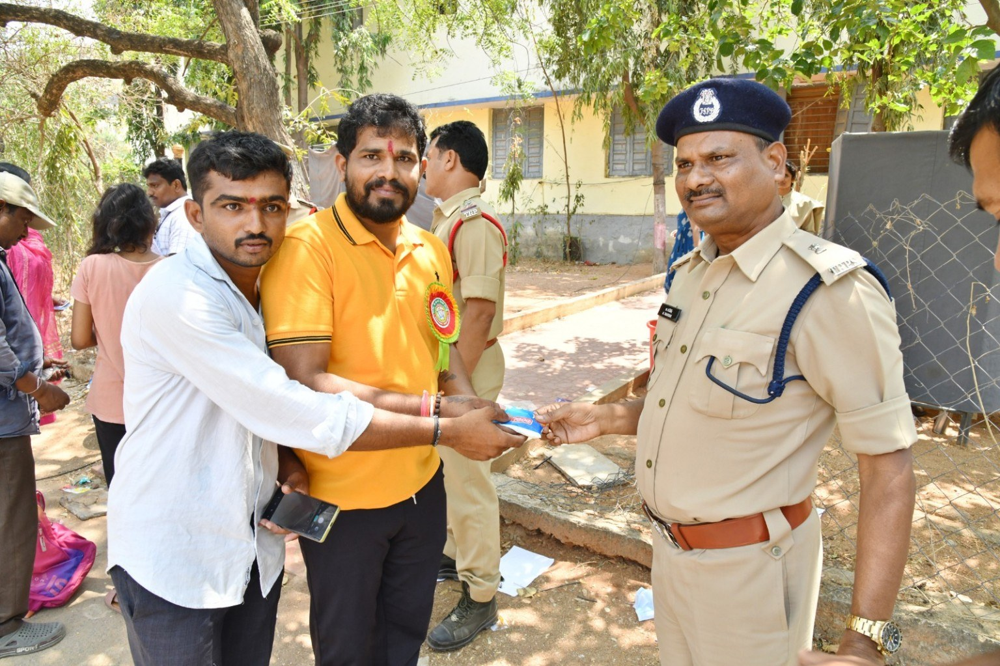
Supporting Public ServantsCommunity service and support for police personnel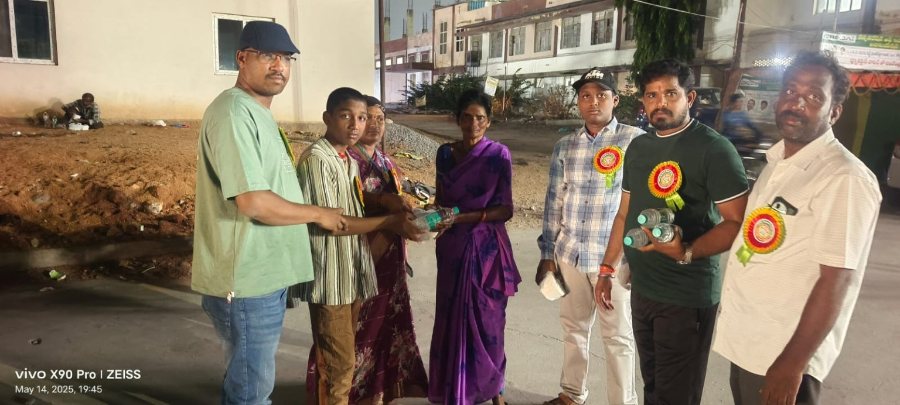
Community OutreachReaching people and families in the community Community WelfareWorking together to support people in need Recognition & AppreciationCelebrating service and community contribution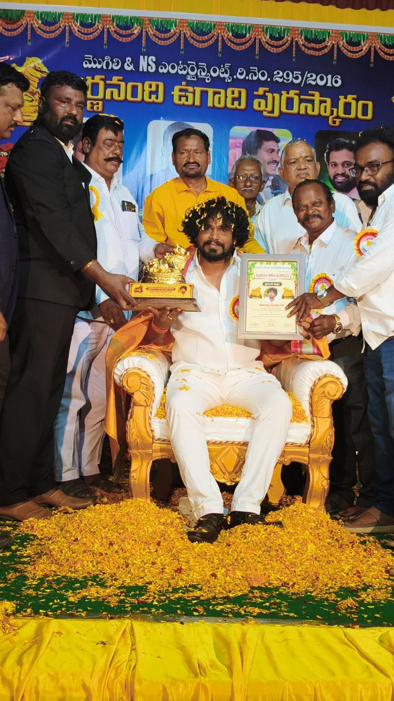
Award CeremonyHonouring social service and leadership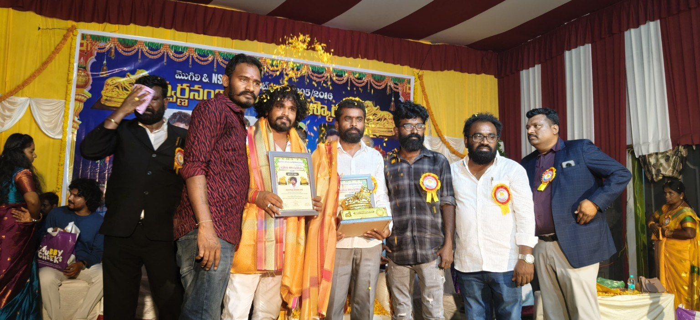
Awards & RecognitionA proud moment with supporters and community members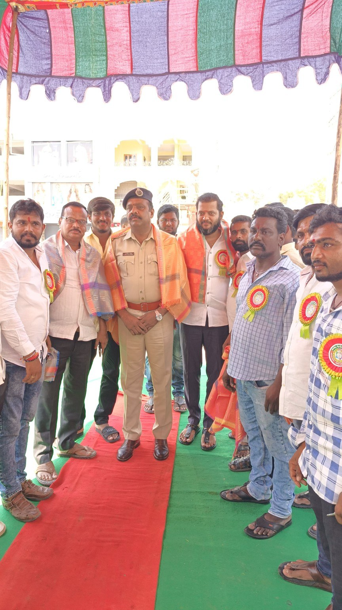
Community TogetherVolunteers and community members coming together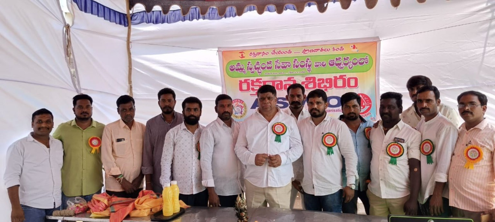
Service EventA glimpse of AMMA’s community activities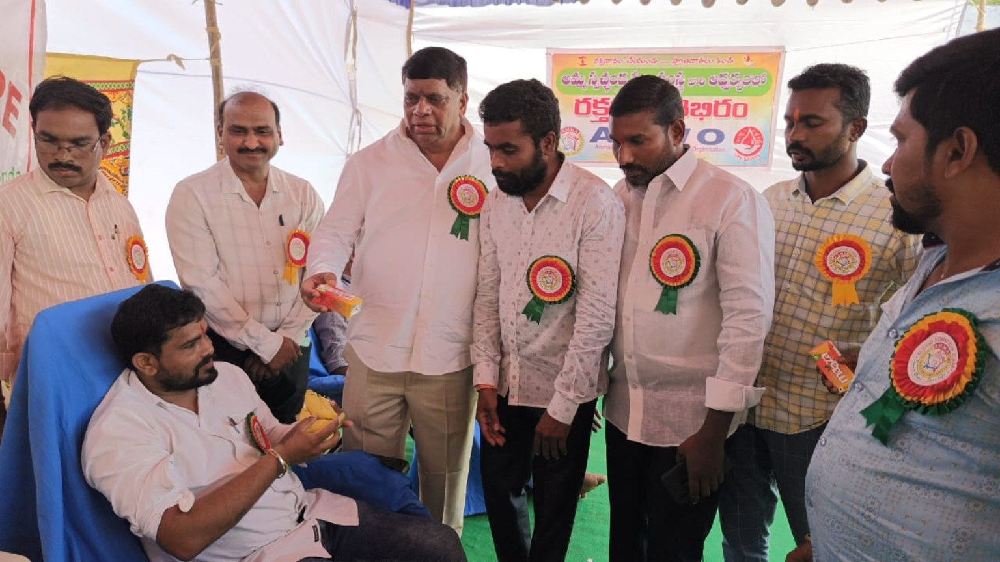
Beneficiary SupportStanding with people who need support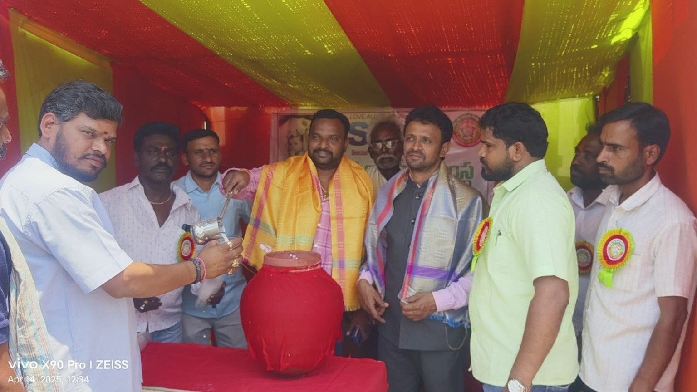
Community EventCommunity participation and serviceWATCH & SHARE
YouTube videos can be embedded here later.
BE PART OF THE JOURNEY
Volunteer, collaborate or support a programme. Your contribution can make a difference.
CONTACT AMMA
Official contact information can be added here later.
📍 Address
Add official office address
📞 Phone
+91 XXXXX XXXXX
✉ Email
info@example.org
{kind=link}
{kind=link}
{kind=link}
{kind=link}
{kind=link}
{kind=link}
{kind=link}
{kind=link}
{kind=link}
{kind=link}
{kind=link}
{kind=link}
{kind=link}